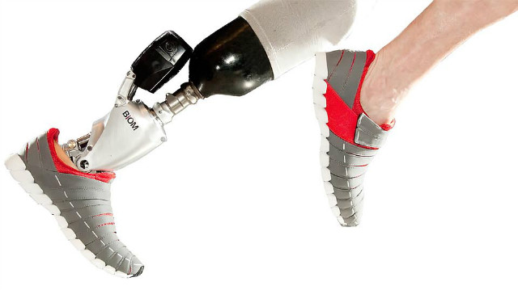

-

Objetivos
-
O TechEdu é um projeto que tem o objetivo de formar Agentes de Transformação oferecendo ferramentas tecnológicas como Programação e Eletrônica junto a noções básicas de Empreendedorismo e Design Thinking para jovens do Ensino Médio, através de um set de workshops e atividades práticas.
Como foi feito
-
Oferecemos Workshops de Programação, Eletrônica, Empreendedorismo e Design Thinking. Neles são apresentados alguns conceitos desses assuntos e os alunos são instigados a desenvolver um projeto de intervenção usando os conceitos aprendidos. São fornecidas apostilas que auxiliam os alunos durante os Workshops. Alguns voluntários do TechEdu podem mentorar grupos durante o desenvolvimento do projeto, que pode durar até 6 meses.
Reportagem do TechEdu no G1
Aprendizados
-
A gente aprende a lidar com crianças que recebem diferentes tipos de educação, nos instigando a cada vez mais procurar maneiras diferentes de ensinar para que todos consigam acompanhar. Saber selecionar as ideias e guiar o grupo é uma dificuldade encontrada, pois queremos que eles possam ir atrás e aprender, aumentando a restrição do que podem ou não desenvolver. É muito gratificante poder ensinar e ajudar esses alunos, saber que você está influenciando em suas vidas e os ajudando a se tornarem agentes de transformação.
Biomecânica
-

O que me interesso e já participei
-
Me interesso muito pela área de Bioengenharia. As inovações na área de saúde estão evoluindo cada vez mais e rapidamente. O sistema de saúde brasileiro ainda é precário e precisa acompanhar esse desenvolvimento. Um dos meus objetivos é a criação de aparelhos que agilizem os processos de atendimento em hospitais, que mecanizem ou facilitem exames e analises, para ajudar na melhora da saúde no Brasil. Um exemplo de aparelho existente é o Oxímetro, que mede a oxidação do sangue rapidamente em um aparelho pequeno. Me interesso muito por esses equipamentos e desejo ser capaz de construí-los.
Estou participando de um projeto chamado Hackathon. Consiste em conhecer várias áreas do Hospital Albert Einstein para tentar encontrar um problema e propor uma solução inovadora. O projeto ainda está em andamento permitindo-me conhecer melhor a organização de um hospital de alto nível e a variedade de máquinas utilizadas no Brasil.
Além desse projeto, estou sendo ouvinte de uma disciplina chamada Biofotônica, que estuda as relações da luz e os tecidos para terapias de fotobiomodulação, por exemplo. A área está em ascensão pelas utilidades estéticas e pelo alto potencial na diminuição de dores e inflamações.
Reportagem minha tratando do assunto